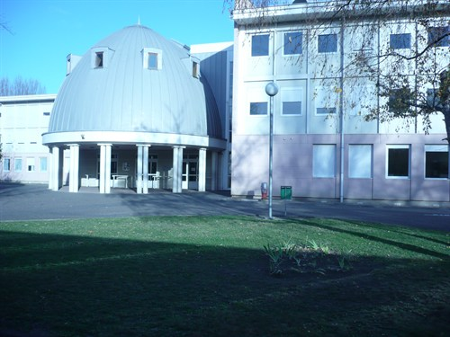
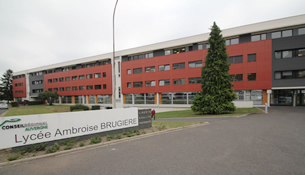
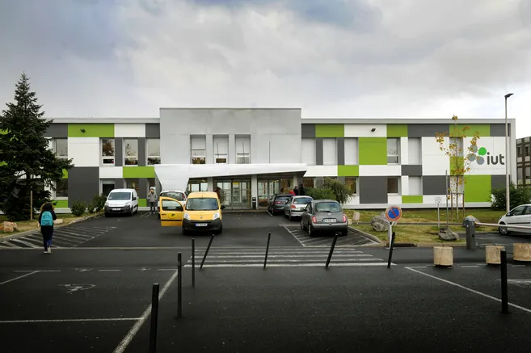

Collège (2017 - 2021)
J'ai fait mes années de sixième à troisième au Collège Anatole France, à Gerzat. J'ai obtenu mon diplôme national du brevet en Juin 2021 avec une mention très bien.
J'ai fait mes années de sixième à troisième au Collège Anatole France, à Gerzat. J'ai obtenu mon diplôme national du brevet en Juin 2021 avec une mention très bien.

J'ai ensuite fait mes années de seconde à terminale au Lycée Ambroise Brugière, à Clermont-Ferrand. J'ai obtenu par la suite mon baccalauréat général en Juin 2024, avec une mention bien.

Passionné par l'informatique, et ayant choisi les spéciatiltés NSI et Maths, avec l'option Maths Expertes, j'ai décidé de me pencher vers le BUT informatique au Campus des Cézeaux, à Aubière, dans le but de devenir développeur d'applications ou web.
